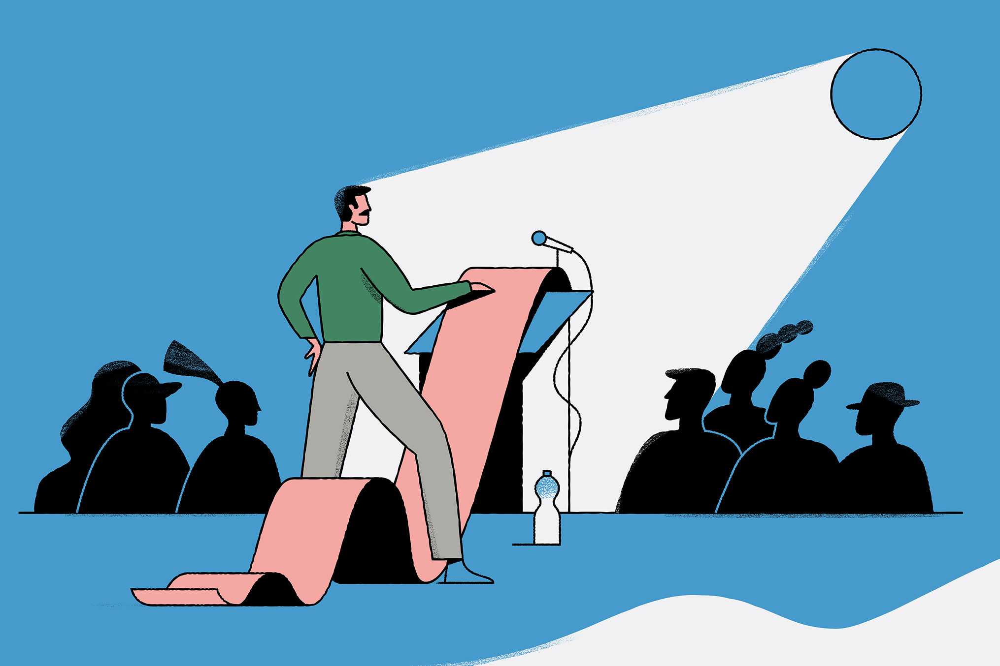

Hello!
I am a 4th year undergraduate psychology major with an area of emphasis in Neuroscience, minoring in cognitive science and computer science. I am looking to earn my Masters in Social Work upon graduation in May 2024.
About Furwah
Languages
- Java
- R coding
- C
- C++


Leadership and Experience
- From January 2021-Present
- Donor Engagement Chair at UGA HEROs
- From May 2022 - May 2023
- Research Assistant at The Georgia Attitude, Bias, and Behavior Acquisition Lab
- From January 2023 - April 2023
- Volunteer in the Nephrology Department at Piedmont
- From May 2022 - July 2022
- Sales Associate at the University of Georgia Bookstore

Skills
- Skill 1:
- Cooking ⭐️⭐️⭐️
- Skill 2:
- Decorating ⭐️⭐️⭐️⭐️
- Skill 3:
- Communication ⭐️⭐️⭐️⭐️⭐️